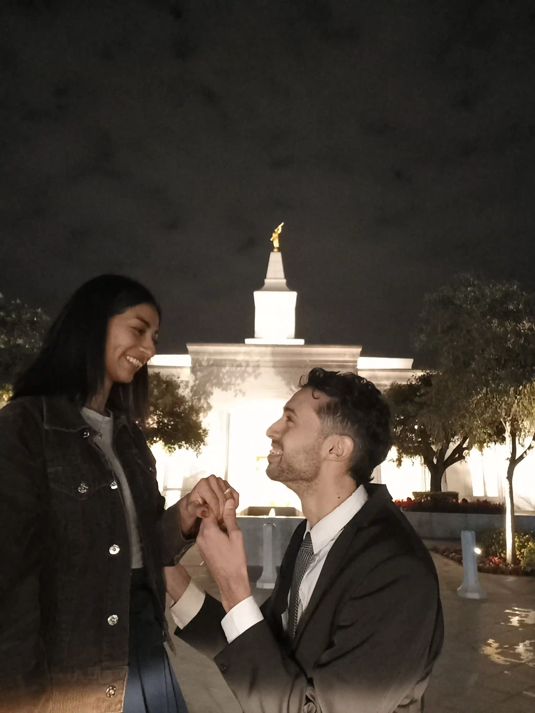
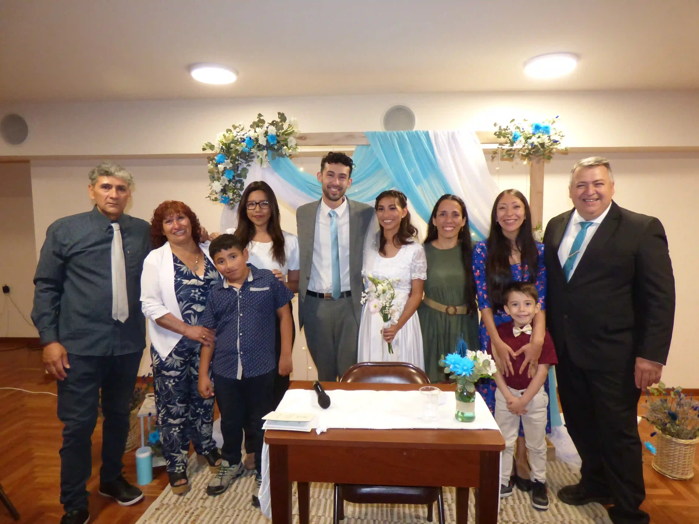
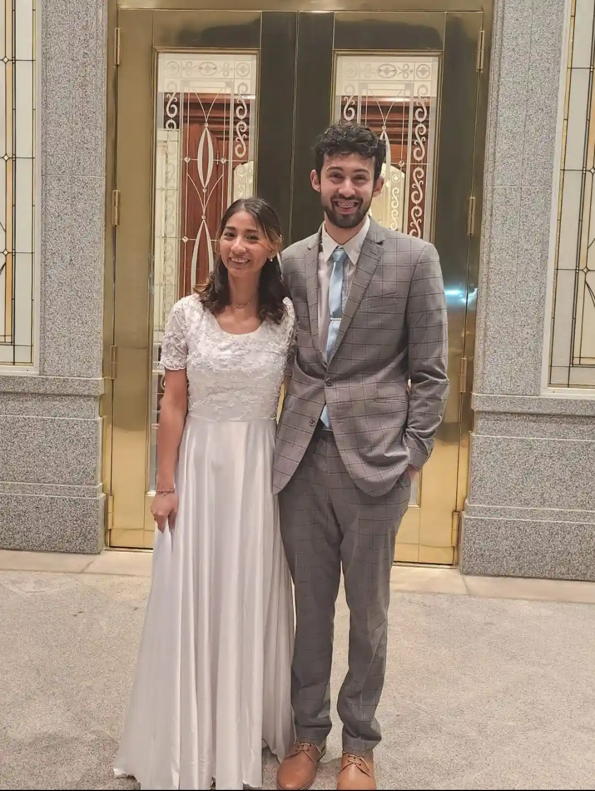

Porpouse
Our main purpose is to celebrate the path we have walked together, from the moment our paths crossed, through the joy of our wedding, to the sacred sealing in the temple of The Church of Jesus Christ of Latter-day Saints. This sealing not only united our lives for this existence but also promises us a union for eternity.
In addition to sharing these fundamental milestones, this space will serve as a digital album of our adventures, showcasing the travels and memories we have created together around the world.
In essence, this site is a testament to the faith, love, and eternal promise that sustains our marriage.
Our history
We met shortly after I returned from serving my full-time mission. It was at a stake choir rehearsal where I saw her for the very first time. The moment I looked at her, I felt something completely new and profound in my heart—the certainty that I needed to get to know her. I gathered my courage and took the first big step: talking to her.
As the weeks passed, our encounters at the choir became the perfect excuse to talk more in depth. But it was after coincidentally running into each other at a Family Home Evening that we took the step of starting to date formally.
Thus, guided by the Gospel and service in the choir, our story began, hand in hand with the love of my eternity.
Us

Our Wedding
After dating for several months, filled with faith and purpose, we got engaged and immediately started preparing for our civil wedding and the celebration. These were very special and fun-filled days. Although things didn't always go exactly as we planned—as often happens—we thoroughly enjoyed every step of the process, working together on every detail. This stage allowed us to see how we would work as a team for the rest of our lives.
That great and special day was October 8, 2023, when we decided to legally unite. For the ceremony, we chose to celebrate our union at the local meetinghouse (or chapel) where we regularly attend. There, we were able to have the officiant (or marriage celebrant) perform the civil ceremony and share our joy with our loved ones, family, and friends.
Although our most sacred covenants still await us in the Lord's temple, this day marked the legal beginning of our life together as husband and wife.

For time and all eternity
The day that marked the beginning of our eternity together finally arrived. On May 4, 2024, we were sealed in the Córdoba Temple, surrounded by the love of our dear ones, both on this side and the other side of the veil.
It was a magnificent occasion where we could feel the fullness of God's love and the warmth of all the people present at the ceremony. The words and scriptures shared by the sealer were deeply meaningful; his emotion as he quoted them made the moment even more touching and personal.
Undoubtedly, this was a day that marked a before and an after in the time and eternity we will spend together as a family.
Temple Sealing
